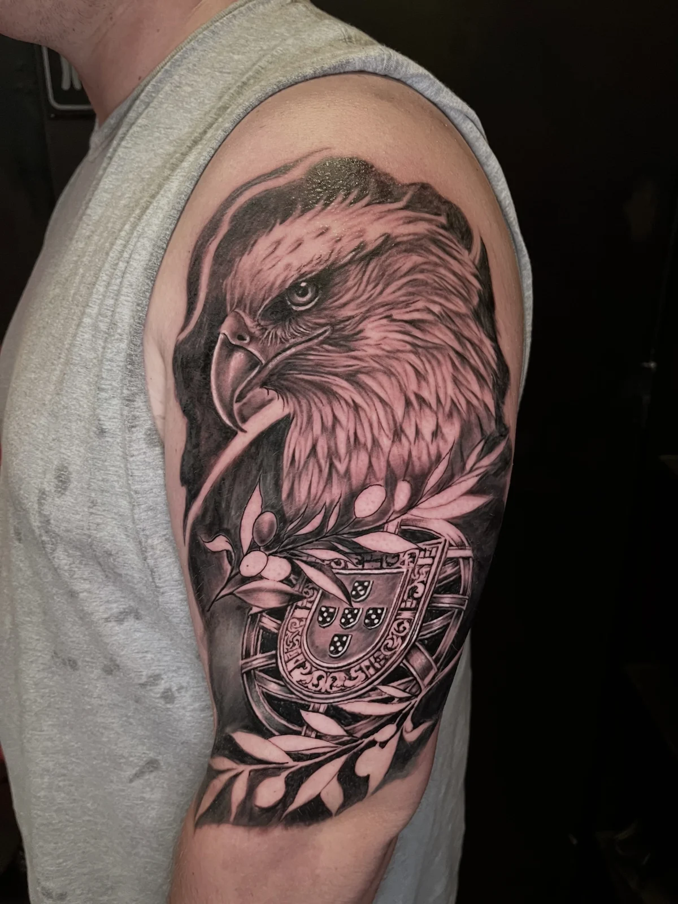

Num só diaPeça em destaque
Águia e caveira
Feita numa única sessão para um cliente que veio do Canadá. Penas, osso e fumo resolvidos só com preto, cinza e o tom da pele, sem perder a leitura de longe.
- 1sessão
- 34peças no portfólio
- 2estilos de realismo